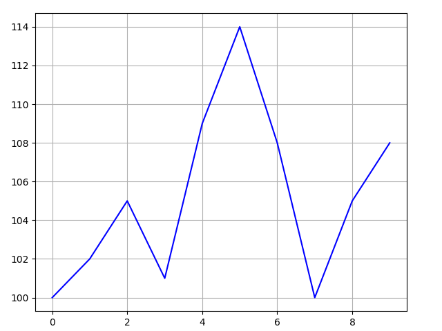
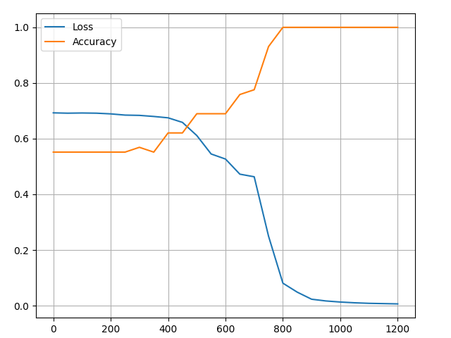
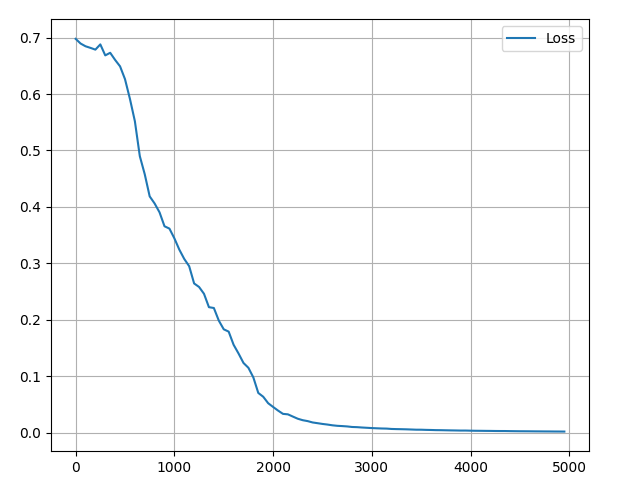

8.1 循环神经网络入门
探索循环神经网络的基础概念，使用 NumPy 从头实现情绪分析模型！
创建日期: 2025-01-18
循环神经网络 (Recurrent Neural Network, RNN) 是一种专门处理序列的神经网络，由于其在处理文本方面非常有效，因此常用于 自然语言处理 (Natural Language processing) 任务中。本节我们将探索 RNN 是什么，理解其工作原理，并使用 Python 语言从头开始构建一个真正的 RNN 网络（仅使用 NumPy 库）。
这需要我们有神经网络的基础知识，如果不了解神经网络的概念，可以查看 第 02 章 深度学习原理 和 第 04 章 详解反向传播算法 的内容，让我们开始吧！
8.1.1 为什么
序列数据 (Sequence Data) 是指具有顺序性的结构化数据，通常以特定的时间或逻辑顺序排列。它在自然语言处理、时间序列分析、信号处理等领域中广泛使用。以下是序列数据的特点：
-
1. 顺序性
数据点之间的顺序至关重要，打乱顺序可能会丢失信息或改变数据的意义。比如股票价格：100, 102, 105, 101 ，顺序决定价格变化的趋势；句子中单词的顺序：“I am happy” 和 “Happy am I” 的意思不同。
-
2. 依赖性
前后数据点之间可能存在依赖关系，比如当前数据点只依赖于临近的点，或者当前数据依赖较远的历史数据。比如文本序列 “The cat is on the …” ，预测最后一个单词，通常只需要考虑最近的几个单词 “is on the” 。
序列数据具有独特的顺序性和依赖性，能够有效地表示时间、空间或逻辑顺序关系。在实际应用中，了解序列数据的特点并选择合适的分析方法和模型，对于提高预测精度和决策质量具有重要意义。
文件 1_1_sequence_data.py 对序列数据进行绘制（可以使用 yfinance 获取真实股票数据）：
stock = [100, 102, 105, 101, 109, 114, 108, 100, 105, 108]
pyplot.plot(range(len(stock)), stock, color='b')结果如下图所示：
基础神经网络（包括 CNN ）的一个问题是它们只能处理预定大小的样本：使用固定大小的输入，并产生固定大小的输出。RNN 很有用，因为它们允许我们将可变长度的序列作为输入和输出。下图列举 RNN 的几种样式：

这种处理序列的能力使得 RNN 非常有用。例如：
-
机器翻译（例如谷歌翻译）是通过“多对多” RNN 完成的，原始文本序列输入到 RNN 中，然后 RNN 生成翻译文本作为输出。
-
情绪分析（例如这是正面还是负面）通常使用“多对一” 的 RNN 网络。要分析的文本被输入到 RNN 中，然后 RNN 产生单个输出分类（例如这是正面）。
接下来，我们将从头构建一个“多对一” RNN 网络，来执行基本的情绪分析，比如 “This is not happy” 属于负面情绪。
8.1.2 如何实现
让我们考虑“多对多”的 RNN 网络，它的输入为 \( x_0, x_1, \dots, x_{n-1}, x_n \) ，想要产生的输出为 \( y_0, y_1, \dots, y_{n-1}, y_n \) 。 \(x_i\) 和 \(y_i\) 都是向量，可以任意长度。
RNN 通过迭代中间隐藏状态 \(h\) 工作，\(h\) 是一个任意维度的向量。初始时，没有隐藏状态，\(h_0\) 使用随机值进行初始化，通过输入 \(x_0\) 和 \(h_0\) 计算输出 \(y_0\) 。在任意给定步骤 \(t\) ：
-
1. 下一个隐藏状态 \(h_t\) 可以通过之前的隐藏状态 \(h_{t-1}\) 和下一个输入 \(x_t\) 计算出来。
-
2. 下一个输出 \(y_t\) 可以使用 \(h_t\) 计算。

以上操作让 RNN 具有循环性：它在每个步骤中使用相同的权重。更具体地说，一个典型的基础循环神经网络仅使用 3 组权重来执行计算：
-
\(W_{xh}\) ，用于所有 \(x_t\) -> \(h_t\) 连接；
-
\(W_{hh}\) ，用于所有 \(h_{t-1}\) -> \(h_t\) 连接；
-
\(W_{hy}\) ，用于所有 \(h_t\) -> \(y_t\) 连接。
我们的 RNN 网络还有两个偏置：
-
\(b_h\) ，用于计算 \(h_t\) 的相加操作；
-
\(b_y\) ，用于计算 \(y_t\) 的相加操作。
使用矩阵表示权重，使用向量表示偏置，上面 3 组权重和 2 组偏置就能构成一个完整的 RNN 。下面公式将所有的参数放在一起：
\(h_t = tanh(W_{xh} \cdot x_t + W_{hh} \cdot h_{t-1} + b_h)\)
\(y_t = W_{hy} \cdot h_t + b_y\)
所有权重都使用矩阵乘法计算，并将偏置添加到乘积结果中。然后我们使用 tanh 作为第一个激活函数（也可以使用其它激活函数，如 sigmoid 函数）。如果不知道什么是激活函数，第 4.2 节 激活函数 详细地介绍了它们。
8.1.3 问题
让我们开始动手吧！将从头开始实现一个 RNN 来执行一个简单的情感分析任务：确定给定的文本字符串是情绪是积极 (Positive) 的，还是消极 (Negative) 的。
文件 pos_peg.py 存放全部的样本数据，以 Python 字典的形式，包含训练集和测试集：
test_data = {
'this is happy': True,
'i am good': True,
'this is not happy': False,
'i am not good': False,
'this is not bad': True,
'i am not sad': True,
'i am very good': True,
}下表是一小部分样本数据：
| Text | Positive? |
|---|---|
| I am good | ✓ |
| I am bad | ❌ |
| This is very good | ✓ |
| This is not bad | ✓ |
| I am bad not good | ❌ |
| I am not at all happy | ❌ |
| This was good earlier | ✓ |
| I am not at all bad or sad right now | ✓ |
8.1.4 计划
由于这是一个分类问题，我们将使用“多对一”的 RNN 。这与我们之前讨论的“多对多“的 RNN 类似，但它仅使用最后的隐藏状态产生一个输出 \(y\) ：

每个 \(x_i\) 都是个向量，表示文本中的单词。输出 \(y\) 是一个包含两个数字的向量，一个代表正向情绪，另一个代表负向情绪。我们将应用 softmax 函数将这些值转换为概率，并最终在 正向 / 负向 之间做出判断。
让我们开始构建 RNN 模型！
8.1.5 预处理
之前提到的数据集包含两个 Python 字典结构：train_data 和 test_data 。我们需要对数据进行预处理，将它转换为可用的形式。对数据集里面存在的单词，构建一个单词表 vocab ，使用单词表中的下标表示单词。
# Create the vocabulary
vocab = list(set([w for text in pos_peg.train_data.keys() for w in text.split(' ')]))
vocab_size = len(vocab)
print('%d unique words found' % vocab_size)
print('Vocab:', vocab)可以运行文件 1_5_pre_process.py 查看具体的情况，因为使用的 Python 语言 set 结构体，内部的顺序是打乱的，所以每个单词每次都能获取到不同的下标值：
18 unique words found
Vocab: ['now', 'and', 'or', 'good', 'not', 'sad', 'is', 'right', 'was', 'earlier',
'at', 'very', 'am', 'i', 'bad', 'this', 'all', 'happy']vocab 包含训练集中至少出现一次的所有单词，现在可以使用对应的整数表示单词表中的单词，这是必要的，因为 RNN 不能理解文本，我们必须给它输入数字。
# Assign indices to each word.
word_to_idx = { w: i for i, w in enumerate(vocab) }
idx_to_word = { i: w for i, w in enumerate(vocab) }
print('Word of good index is', word_to_idx['good'])
print('First word is "' + idx_to_word[0] + '"')上述代码生成了两个 dict 结构体，使用第一个结构体查看单词 good 的下标，使用第二个结构体查看下标 0 是哪个单词：
Word of good index is 3
First word is "now"之前提到过每个输入 \(x_i\) 都是一个向量，这里我们使用 独热 (One-Hot) 向量进行编码，用于将离散的单词数据编码成向量的形式。每个单词由一个独特的向量表示，其中只有一个位置为1，其他位置为0。
假设有三个类别：“Cat” ，“Dog” ，“Rabbit” ，对应的索引为 0，1，2 。那么 “Cat” 的 one-hot 向量为 [1, 0, 0] ，“Dog” 的 one-hot 向量为 [0, 1, 0] 。
因为在字典里有 18 个不同的单词，所以每个 \(x_i\) 的 one-hot 向量长度为 18 。使用 create_inputs 将文本数据转换为向量输入传递到神经网络中：
def create_inputs(text):
'''
Return an array of one-hot vectors representing the words
in the input text string.
- text is a string
- each one-hot vector has shape (vocab_size, 1)
'''
inputs = []
for w in text.split(' '):
v = numpy.zeros((vocab_size, 1))
v[word_to_idx[w]] = 1
inputs.append(v)
return inputs比如将 “i am not at all good” 编码成为输入矩阵，得到的形状为 (6, 18, 1) 。
inputs = create_inputs('i am not at all good')
print('Input data shape', numpy.array(inputs).shape)第一个维度大小表示句子中单词的个数，第二个维度表示词汇表中单词的个数，注意第三个维度的大小为 1 ，主要是便于后续计算。
8.1.6 前向传播
让我们开始实现 RNN 网络。使用标准正态分布，初始化 3 组权重值和 2 组偏置：
class RNN:
# A vanilla recurrent neural network.
def __init__(self, vocab_size, output_size, hidden_size=64):
rng = numpy.random.default_rng(seed=0)
self.Whh = rng.standard_normal((hidden_size, hidden_size)) / 1000
self.Wxh = rng.standard_normal((hidden_size, vocab_size)) / 1000
self.Why = rng.standard_normal((output_size, hidden_size)) / 1000
self.bh = numpy.zeros((hidden_size, 1))
self.by = numpy.zeros((output_size, 1))接下来实现 RNN 网络的前向传播，记住下面两个公式：
\(h_t = tanh(W_{xh} \cdot x_t + W_{hh} \cdot h_{t-1} + b_h)\)
\(y_t = W_{hy} \cdot h_t + b_y\)
文件 1_6_rnn_forward.py 将它们用代码实现：
def forward(self, inputs):
'''
Perform a forward pass of the RNN using the given inputs.
Inputs is an array of one-hot vectors with shape (word_size, vocab_size, 1).
Returns the final output and hidden state.
'''
h = numpy.zeros((self.Whh.shape[0], 1))
# Perform each step of the RNN.
for _, x in enumerate(inputs):
h = numpy.tanh(self.Wxh @ x + self.Whh @ h + self.bh)
# Compute the output.
y = self.Why @ h + self.by
return y, h看上去非常简单？注意第一步我们将 \(h\) 初始化为零向量，因为在那之前没有隐藏状态。
例如当我们的第一个输入单词为 \(x \in \mathbb{R}^{18 \times 1}\) 时，下述公式可以看到网络的维度变化：
\(h \in \mathbb{R}^{64 \times 1} = tanh(W_{xh} \in \mathbb{R}^{64 \times 18} \cdot x \in \mathbb{R}^{18 \times 1} + W_{hh} \in \mathbb{R}^{64 \times 64} \cdot h \in \mathbb{R}^{64 \times 1} + b_h \in \mathbb{R}^{64 \times 1})\)
\(y \in \mathbb{R}^{2 \times 1} = W_{hy} \in \mathbb{R}^{2 \times 64} \cdot h \in \mathbb{R}^{64 \times 1} + b_y \in \mathbb{R}^{2 \times 1}\)
以此类推，直到最后一个单词，经过 softmax 函数转换为概率值，完成网络的前向传播过程：
rnn = RNN(vocab_size, 2)
inputs = create_inputs('i am very good')
out, h = rnn.forward(inputs)
porbs = softmax(out)
print(porbs)传递 “i am very good” 看看网络的输出情况：
[[0.4999993]
[0.5000007]]此时网络起作用了，输出两个相近的概率值，但是并没有什么用，接下来使用反向传播进行训练！
8.1.7 反向传播
以下部分假设你具有微积分的基本知识，如果不想看，可以跳过它，但是我建议你不要跳过。如果你没有这部分背景，可以阅读 第 4.1 节 导数 的内容。即使只是大概地浏览计算过程，对于理解循环神经网络也是有帮助的。
8.1.7.1 损失函数
为了训练我们的 RNN ，需要有损失函数，这里选择交叉熵损失函数，它经常和 softmax 函数一起使用，具体介绍查看 第 4.3.3 小节 交叉熵损失 的内容 ，计算规则如下：
\(loss = - \sum_{i=1}^n y_i \ln(p_i)\)
-
\(n\) 表示类别数量；
-
\(y_i\) 是目标分布的真实标签，如果属于类别 \(i\) ，则 \(y_i = 1\) ，否则 \(y_i = 0\) ；
-
\(p_i\) 是模型预测属于类别 \(i\) 的概率（通过 softmax 得到的概率值）。
在本例中，目标分布有 [0, 1] 和 [1, 0] 两种情况，[0, 1] 表示目标为正向情绪的类别，[1, 0] 表示目标为负向情绪的类别。对于单个样本，如果真实类别为 \(c\) ，只有对应的 \(y_c = 1\) ，其它为 0。因此可以将上面公式进行简化：
\(l = - \ln(p_c)\)
其中 \(p_c\) 表示模型对正确类别（正向情绪或负向情绪）的预测概率。
比如文本预测出来的结果为 [0.1, 0.9] ，真实标签是正向的情绪，那么它的损失为：
\(l = -\ln(0.9) = 0.105\)
如果真实标签为负向情绪，那么它的损失为：
\(l = -\ln(0.1) = 2.302585\)
可以看到如果目标预测错误，那么它的损失较大。如果目标预测正确，那么它的损失接近于 0 。有了损失函数后，就可以用梯度下降最小化损失，这意味着需要对一些变量进行求导。
8.1.7.2 定义
对一些变量进行定义：
-
\(y\) 表示 RNN 神经网络的输出；
-
\(p\) 表示最后的概率：\(p = softmax(y)\) ；
-
\(c\) 表示文本的正确标签；
-
\(l\) 表示交叉熵损失：\(l = -\ln(p_c)\) ，\(p_c\) 是预测正确类别的概率；
-
\(W_{xh}\) ，\(W_{hh}\) 和 \(W_{hy}\) 表示 RNN 的 3 个权重矩阵；
-
\(b_h\) 和 \(b_y\) 表示 RNN 的 2 个偏置向量。
8.1.7.3 设置
另外我们需要在前向传播的过程中，存储一些数值，主要是每个单词的隐藏状态，用于反向传播的计算。构建反向传播的框架：
class RNN:
def forward(self, inputs):
h = numpy.zeros((self.Whh.shape[0], 1))
self.last_inputs = inputs
self.last_hs = { 0: h}
# Perform each step of the RNN.
for i, x in enumerate(inputs):
h = numpy.tanh(self.Wxh @ x + self.Whh @ h + self.bh)
self.last_hs[i + 1] = h
# Compute the output.
y = self.Why @ h + self.by
return y, h
def backprop(self, dy, learn_rate=2e-2):
# dy (dl/dy) has shape (output_size, 1)
pass8.1.7.4 梯度
接下来是数学时间！梯度分为三个阶段进行计算：
-
第一阶段计算损失 \(l\) 相对于输出 \(y\) 的梯度；
-
第二个阶段计算输出 \(y\) 相对于最后一个节点的隐藏状态 \(h_n\) 的梯度 ，同时更新参数 \(W_{hy}\) 和 \(b_y\) ；
-
第三个阶段是计算最后一个隐藏状态 \(h_n\) 相对于输入 \(x\) 的梯度，同时更新参数 \(W_{xh}\) 、\(W_{hh}\) 和 \(b_h\) 。
第一阶段计算 \(\frac{\partial l}{\partial y}\) ，根据公式：
\(l = -\ln(p_c) = -\ln(softmax(y_c))\)
\(l\) 关于 \(y_c\) 的偏导数，分两种情况讨论：当 \(i = c\) 和 \(i \ne c\) ：
-
1. 当 \(i = c\) （目标类别）
\(\frac{\partial l}{\partial y_c} = \frac{\partial (-ln(p_c))}{\partial y_c}\) ，利用链式法则：\(\frac{\partial l}{\partial y_c} = \frac{\partial l}{\partial p_c} \cdot \frac{\partial p_c}{\partial y_c}\)
交叉熵损失函数的导数公式为：\(\frac{\partial l}{\partial p_c} = - \frac{1}{p_c}\)
softmax 的导数公式为：\(\frac{\partial p_c}{\partial y_c} = p_c(1 - p_c)\)
代入得到 \(\frac{\partial l}{\partial y_c} = -\frac{1}{p_c} \cdot p_c \cdot (1 - p_c) = p_c - 1\)
-
2. 当 \(i \ne c\) （非目标类别）
\(\frac{\partial l}{\partial y_c} = \frac{\partial (-ln(p_c))}{\partial y_c}\) ，同样利用链式法则：\(\frac{\partial l}{\partial y_c} = \frac{\partial l}{\partial p_c} \cdot \frac{\partial p_c}{\partial y_c}\)
\(\frac{\partial p_c}{\partial y_i} = -p_c \cdot p_i\)
代入得到 \(\frac{\partial l}{\partial y_i} = -\frac{1}{p_c} \cdot p_c \cdot p_i\)
经过计算我们得到损失 \(l\) 相对于输出 \(y\) 的梯度：
\( \frac{\partial l}{\partial y_i} = \left\{ \begin{array}{ll} p_i - 1 & \text{if } i = j \\ p_i & \text{if } i \neq j \end{array} \right. \)
比如我们有一个概率 \(p = [0.2, 0.2, 0.6]\) ，正确得分类为 \(c = 0\) ，那么可以得到 \(\frac{\partial l}{\partial y} = [-0.8, 0.2, 0.6]\) 。这很容易转化为代码：
def process(data, backprop=True):
items = list(data.items())
random.shuffle(items)
loss = 0
num_correct = 0
for x, y in items:
inputs = create_inputs(x)
target = int(y)
# forward
out, _ = rnn.forward(inputs)
probs = softmax(out)
# calculate loss / accuracy
loss -= numpy.log(probs[target])
num_correct += int(numpy.argmax(probs) == target)
if backprop:
# build dl/dy
dl_dy = probs
dl_dy[target] -= 1
# backward
rnn.backprop(dl_dy)第二阶段需要计算 \(W_{hy}\) 和 \(b_y\) 的梯度，它们是唯一将隐藏状态转换为输出的节点：
\(\frac{\partial l}{\partial W_{hy}} = \frac{\partial l}{\partial y} \cdot \frac{\partial y}{\partial W_{hy}}\)
根据公式 \(y = W_{hy} \cdot h_n + b_y\)
\(\frac{\partial y}{\partial W_{hy}} = h_n\)，其中 \(h_n\) 是最后的隐藏状态，因此可以得到：
\(\frac{\partial l}{\partial W_{hy}} = \frac{\partial l}{\partial y} \cdot h_n\)
同样 \(\frac{\partial y}{\partial b_y} = 1\) ，得到：
\(\frac{\partial l}{\partial b_y} = \frac{\partial l}{\partial y}\)
如下使用代码表示：
def backprop(self, dy, learn_rate=2e-2):
# dy (dl/dy) has shape (output_size, 1)
n = len(self.last_inputs)
# calculate dl/dwhy and dl/dby
dwhy = dy @ self.last_hs[n].T
dby = dy第三阶段需要计算每一步的 \(W_{hh}\) ，\(W_{xh}\) 和 \(b_h\) 的梯度，我们有下面公式：
\(\frac{\partial l}{\partial W_{xh}} = \frac{\partial l}{\partial y} \sum_{t=0}^{n} (\frac{\partial y}{\partial h_t} \cdot \frac{\partial h_t}{\partial W_{xh}}) \)
因为改变 \(W_{xh}\) 会影响每个 \(h_t\) ，通过影响 \(y\) 值，最终影响损失 \(l\) 。为了计算 \(W_{xh}\) 的梯度，我们需要对所有的 \(t\) 进行反向传播，这就是著名的 时间上反向传播 (Backpropagation Through Time, BPTT) 。

上述公式需要分别计算 \(\frac{\partial y}{\partial h_t}\) 和 \(\frac{\partial h_t}{\partial W_{xh}}\) 的梯度。
\(W_{xh}\) 在所有的 \(x_t\) -> \(h_t\) 连接中都用到，所以要对所有的此类连接进行反向传播。对于给定步骤 \(t\) ，我们需要计算 \(\frac{\partial h_t}{\partial W_{xh}}\) ：
\(h_t = tanh(W_{xh} \cdot x_t + W_{hh} \cdot h_{t-1} + b_h)\)
其中，我们知道 \(\frac{d \tanh(x)}{dx} = 1 - \tanh^2(x)\) ，因此
\(\frac{\partial h_t}{\partial W_{xh}} = (1 - h_t^2)x_t\)
同样根据上述公式对其它两个参数进行求导得到：
\(\frac{\partial h_t}{\partial W_{hh}} = (1 - h_t^2)h_{t-1}\)
\(\frac{\partial h_t}{\partial b_h} = (1 - h_t^2)\)
最后需要 \(\frac{\partial y}{\partial h_t}\) ，我们可以使用循环计算：
\(\frac{\partial y}{\partial h_t} = \frac{\partial y}{\partial h_{t+1}} \cdot \frac{\partial h_{t+1}}{\partial h_t} = \frac{\partial y}{\partial h_{t+1}} \cdot (1 - h_t^2) \cdot W_{hh}\)
BPTT 的实现从最后一个隐藏状态开始，然后反向传递。因此当我们想要计算 \(\frac{\partial y}{\partial h_t}\) 时，已经计算出 \(\frac{\partial y}{\partial h_{t+1}}\) 的值，除了最后一个状态 \(h_n\) ：
\(\frac{\partial y}{\partial h_n} = W_{hy}\)
现在我们已经有了实施 BPTT 需要的一切参数，文件 1_7_rnn_backward.py 用代码实现 RNN 的反向传播：
class RNN:
# ...
def backprop(self, dy, learn_rate=2e-2):
# dy (dl/dy) has shape (output_size, 1)
n = len(self.last_inputs)
# calculate dl/dwhy and dl/dby
dwhy = dy @ self.last_hs[n].T
dby = dy
# initialize dl/dwhh, dl/dwxh, and dl/dbh to zero
dwhh = numpy.zeros(self.Whh.shape)
dwxh = numpy.zeros(self.Wxh.shape)
dbh = numpy.zeros(self.bh.shape)
# calculate dl/dh for the last h
# dl/dh = dl/dy * dy/dh
dh = self.Why.T @ dy
# backpropagation through time
for t in reversed(range(n)):
# an intermediate value: dl/dh * (1 - h^2)
temp = ((1 - self.last_hs[t+1] ** 2) * dh)
# dl/db = dl/dh * (1 - h^2)
dbh += temp
# dl/dwhh = dl/dh * (1 - h^2) * h_{t-1}
dwhh += temp @ self.last_hs[t].T
# dl/dwxh = dl/dh * (1 - h^2) * x
dwxh += temp @ self.last_inputs[t].T
# next dl/dh = dl/dh * (1 - h^2) * Whh
dh = self.Whh.T @ temp
# clip to prevent exploding gradients
for d in [dwxh, dwhh, dwhy, dbh, dby]:
numpy.clip(d, -1, 1, out=d)
# update weights and biases using gradient descent
self.Whh -= learn_rate * dwhh
self.Wxh -= learn_rate * dwxh
self.Why -= learn_rate * dwhy
self.bh -= learn_rate * dbh
self.by -= learn_rate * dby有几点需要注意的是：
-
为了方便，使用 \(\frac{\partial l}{\partial h}\) 直接代替 \(\frac{\partial l}{\partial y} \cdot \frac{\partial y}{\partial h}\) 。
-
为了计算 \(\frac{\partial l}{\partial h_t}\) ，不停地更新
dh的值，它存储最新计算出来的 \(\frac{\partial l}{\partial h_{t+1}}\) 的值。 -
结束 BPTT 后，使用
numpy.clip()去掉梯度在 -1 以下，或者 1 以上的值。这有助于缓解梯度爆炸问题，即由于存在大量乘项导致梯度变得非常大。梯度爆炸或消失对于普通 RNN 来说是个问题 - 更复杂的 RNN （如 LSTM）通常更有能力处理它们。 -
一旦计算出所有梯度，就使用梯度下降来更新权重和偏差。
我们已经成功完成 RNN 的反向传播！
8.1.8 测试
终于到了激动人心的时刻，接下来就需要对 RNN 网络进行测试，编写一个辅助函数：
def process(data, backprop=True):
items = list(data.items())
random.shuffle(items)
loss = 0
num_correct = 0
for x, y in items:
inputs = create_inputs(x)
target = int(y)
# forward
out, _ = rnn.forward(inputs)
probs = softmax(out)
# calculate loss / accuracy
loss -= numpy.log(probs[target])
num_correct += int(numpy.argmax(probs) == target)
if backprop:
# build dl/dy
dl_dy = probs
dl_dy[target] -= 1
# backward
rnn.backprop(dl_dy)
# Convert NumPy scalar to Python scalar.
if isinstance(loss, numpy.ndarray):
loss = loss.item()
return loss / len(data), num_correct / len(data)编写训练循环：
losses = []
accuracies = []
# training loop
for epoch in range(500):
train_loss, train_acc = process(pos_peg.train_data)
if (epoch + 1) % 50 == 0:
losses.append(train_loss)
accuracies.append(train_acc)
print('Epoch %d' % (epoch + 1))
print('Train: loss %.3f | accuracy: %.3f' % (train_loss, train_acc))
test_loss, test_acc = process(pos_peg.test_data, backprop=False)
print('Test: loss %.3f | accuracy: %.3f' % (test_loss, test_acc))跑我们的脚本文件 1_7_rnn_backward.py 会得到一些输出，像下面这样：
Epoch 20
Train: loss 0.693 | accuracy: 0.552
Test: loss 0.698 | accuracy: 0.500
Epoch 40
Train: loss 0.692 | accuracy: 0.552
Test: loss 0.697 | accuracy: 0.500
Epoch 60
Train: loss 0.692 | accuracy: 0.552
Test: loss 0.696 | accuracy: 0.500
Epoch 80
Train: loss 0.692 | accuracy: 0.552
Test: loss 0.699 | accuracy: 0.500
Epoch 100
Train: loss 0.689 | accuracy: 0.534
Test: loss 0.697 | accuracy: 0.500绘制训练过程的损失和精确度变化：
可以看到训练损失逐渐降低，训练精度逐渐提高，最终达到平衡，训练结束。
训练完成后，使用新的用例进行预测:
(predict, _) = rnn.forward(create_inputs('i am good'))
print('Predict text "i am good":', softmax(predict))查看结果：
Predict text "i am good": [[0.01181507] [0.98818493]]这就是全部！在这节中，我们经历了循环神经网络的整个过程，包括它们是什么、如何工作、它们为什么有用、如何训练它们以及如何实现。我们还可以做得更多：
-
了解长短期记忆网络（LSTM ，一种更强大、更流行的 RNN 架构）或门控循环单元 （GRU，LSTM 的著名变体）。
-
使用机器学习库，（如 TensorFlow 、PyTorch 、JAX ）实验更大/更好的数据。
-
阅读有关 双向 RNNs 的信息，它可以处理正向的和反向序列，以便为输出层提供更多的信息。
-
尝试使用 词嵌入 (Word Embedding) ，比如 GloVe 或 Word2Vec ，它可以将语句转换为更有用的向量表示。
8.1.9 PyTorch 实现
文件 1_9_rnn_torch.py 使用 PyTorch 实现 RNN 架构，对文本进行正向和负向分类的完整示例，其中核心代码为：
# 定义模型
class RNNClassifier(torch.nn.Module):
def __init__(self, vocab_size, embedding_dim, hidden_dim, output_dim):
super(RNNClassifier, self).__init__()
self.embedding = torch.nn.Embedding(vocab_size, embedding_dim)
self.rnn = torch.nn.RNN(embedding_dim, hidden_dim, batch_first=True)
self.dense = torch.nn.Linear(hidden_dim, output_dim)
def forward(self, x):
embedded = self.embedding(x)
_, hidden = self.rnn(embedded)
# 取最后一个隐藏状态
hidden = hidden[-1]
out = self.dense(hidden)
return out代码说明：
-
1. 数据预处理：文本被编码为词索引，并填充到固定长度 (max_len) 。
-
2. RNN 模型使用嵌入层 (nn.Embedding) 将词索引映射为向量，使用 nn.RNN 构建循环神经网络。用全连接层 (nn.Linear) 将隐藏状态映射为分类结果。
-
3. 训练与测试：通过 DataLoader 迭代数据，使用交叉熵损失函数优化模型。
和手写 RNN 的逻辑基本一致。
运行代码：
Epoch 1/100, loss: 0.6992
Epoch 11/100, loss: 0.6679
Epoch 21/100, loss: 0.4506
Epoch 31/100, loss: 0.2457
Epoch 41/100, loss: 0.0999
Epoch 51/100, loss: 0.0307
Epoch 61/100, loss: 0.0142
Epoch 71/100, loss: 0.0086
Epoch 81/100, loss: 0.0059
Epoch 91/100, loss: 0.0041损失逐渐降低，最终接近 0 ，非常好的结果。下图是绘制的损失变化图像：
